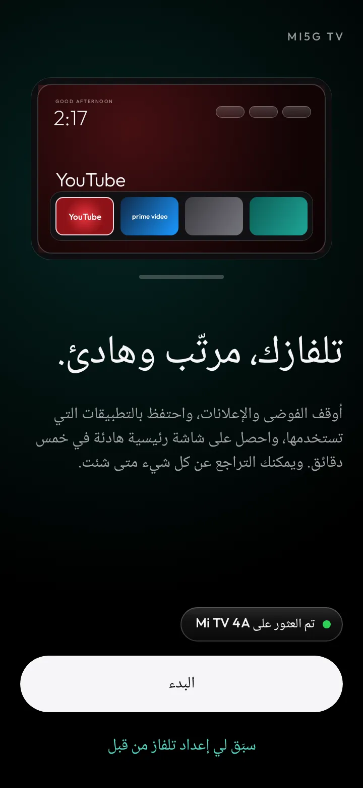
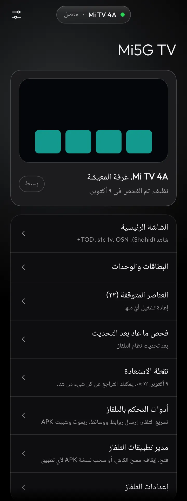
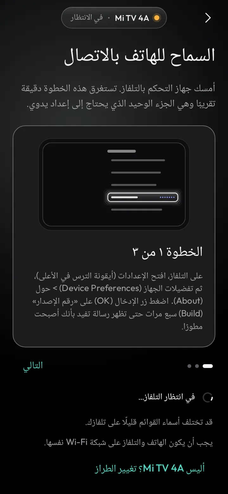
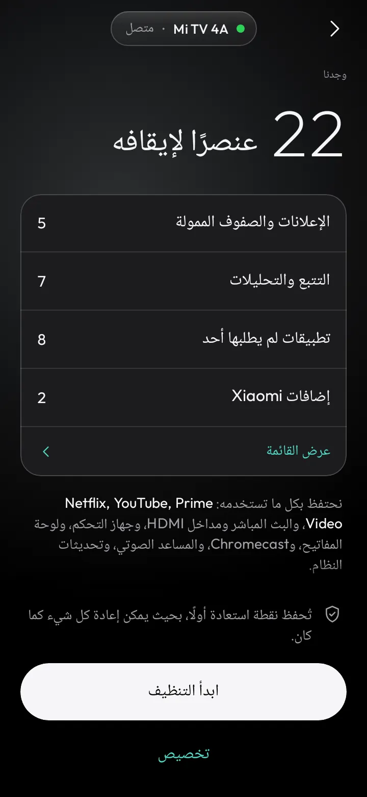
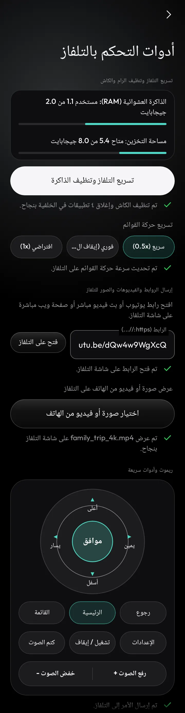
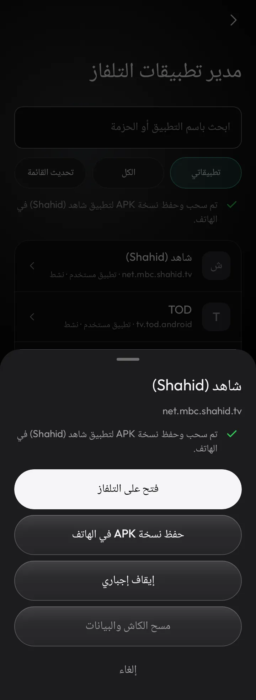
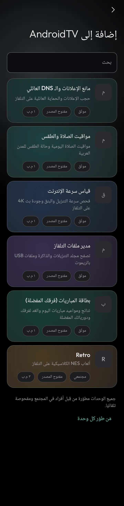

تقنية6 دقائق
تطبيق Mi5G TV: نظّف وسرّع شاشات Android TV وGoogle TV وFire TV من هاتفك بدون روت
تطبيق Mi5G TV (com.midroid.mi5gtv) تطبيق أندرويد متكامل باللغة العربية ومجاني لتنظيف وتسريع شاشات وأجهزة Android TV وGoogle TV وFire TV. يعمل من هاتفك مباشرةً عبر شبكة الـ Wi-Fi باستخدام تصحيح الأخطاء عبر الشبكة (ADB over Wi-Fi) ومن دون روت، ويضم ريموت تحكم متكاملًا ومدير تطبيقات ووحدات إضافية مصممة للتلفاز. يتطلب التطبيق هاتفًا بنظام Android 8.0 أو أحدث، وقد صدر أحدث إصداراته v1.6.0 في 29 أكتوبر 2026.


ما الجديد في الإصدار 1.6.0
بحسب ملاحظات الإصدار v1.6.0:
- لوحة صحة التلفاز: مؤشر صحة مباشر (الذاكرة والتخزين والتطبيقات المعطّلة) وزر تنظيف واحد يحفظ نقطة استعادة أولًا.
- حذف آمن: التجميد هو الخيار الافتراضي، والحذف النهائي يتطلب كتابة «احذف» ووجود نقطة استعادة.
- «تطبيقاتي» منفصلة عن «المصنع»، وتطبيقات البث (شاهد، stc tv، STARZ، YouTube TV، TOD، OSN+، beIN) محمية من التجميد والحذف.
- وضع المساء لكل تلفاز: حركة القوائم 0.5× وDNS عائلي، دون فرض الأذان.
- فحص منفذ 853 قبل تثبيت DNS المشفّر، مع وضع آمن تلقائي إذا كان المنفذ محجوبًا.
- خطة ونقطة استعادة لكل تلفاز على حدة.
- Downloader: حقل واحد لإدخال أي كود أو رابط APK يناسبك، بدون أكواد جاهزة.
- اللغة الإنجليزية كخيار إضافي في الإعدادات (العربية افتراضية) مع تبديل الاتجاه تلقائيًا.
- تلفزيونات Samsung (Tizen) وLG (webOS): دليل إرشادي فقط.
- ألوان جديدة وخط Cairo.
طريقة الإعداد خطوة بخطوة
- الشبكة نفسها: تأكد أن الهاتف والتلفاز متصلان بشبكة Wi-Fi واحدة.
- تفعيل خيارات المطور: من التلفاز افتح الإعدادات > تفضيلات الجهاز (أو النظام) > حول (About)، واضغط زر موافق (OK) على «رقم الإصدار» (Build) سبع مرات متتالية.
- تفعيل التصحيح: ادخل خيارات المطور (Developer options) وفعّل تصحيح أخطاء USB (USB debugging) أو تصحيح الأخطاء اللاسلكي/عبر الشبكة.
- الربط: افتح Mi5G TV على الهاتف وسيعثر على التلفاز تلقائيًا في الشبكة، أو أدخل عنوان الـ IP يدويًا.
- السماح دائمًا: ستظهر نافذة تأكيد على شاشة التلفاز؛ اختر «السماح دائمًا من هذا الكمبيوتر» (Always allow) ثم موافق.
- مراجعة الخطة: يعرض التطبيق عدد عناصر الإعلانات والتتبع التي وجدها مع بقاء تطبيقاتك الأساسية محمية. اضغط «ابدأ التنظيف» ليحفظ نقطة استعادة تلقائية أولًا ثم ينظّف النظام ويثبّت الشاشة الرئيسية الهادئة.


تنظيف التلفاز وإيقاف الإعلانات بأمان
يوقف التطبيق تطبيقات الإعلانات والتتبع والعروض الترويجية المدمجة في النظام بدون حذف أي بيانات، مع دعم أكثر من 138 ملف تعريف لمختلف ماركات الشاشات مثل Sony وTCL وXiaomi Mi TV وHisense وPhilips وThomson/Kodak وChromecast وغيرها. وقبل أي تعديل يحفظ نقطة استعادة كاملة تتيح لك استرجاع الحالة السابقة بضغطة زر.
شاشة رئيسية نظيفة وحماية تطبيقات البث العربية
يثبّت التطبيق شاشة رئيسية خفيفة وسريعة خالية من الإعلانات مع شريط تطبيقات قابل للتخصيص، ويتعرّف تلقائيًا على تطبيقات البث العربية والعالمية ويحميها، ومنها شاهد وTOD وstc tv وSTARZPLAY وOSN+ وWATCH IT وYango Play والأولى وأوان وأنغامي وbeIN CONNECT وYouTube وNetflix.
تسريع التلفاز (Speed Boost)
- عرض لحظي لاستهلاك الذاكرة العشوائية (RAM) والمساحة التخزينية.
- تنظيف الملفات المؤقتة (Cache) وإغلاق التطبيقات العالقة في الخلفية بضغطة واحدة.
- التحكم بسرعة حركة القوائم: سريع 0.5x أو فوري 0x أو افتراضي 1x.
الريموت وتصوير الشاشة والإرسال السريع
- ريموت دائري (D-Pad): الاتجاهات والصوت وكتم الصوت والطاقة والإعدادات، وإرسال النصوص من كيبورد الهاتف إلى التلفاز.
- تصوير شاشة التلفاز وحفظ الصورة أو مشاركتها من الهاتف.
- إرسال الروابط والصور والفيديو من الهاتف إلى شاشة التلفاز، مع تثبيت ملفات APK عن بُعد.


مدير تطبيقات التلفاز: 7 إجراءات
يستعرض المدير جميع تطبيقات التلفاز مع مفتاح لإظهار تطبيقات النظام والمصنع، ويوفر لكل تطبيق سبعة إجراءات: فتح على التلفاز، وإيقاف إجباري، ومنع العمل بالخلفية، وتجميد/تعطيل، وتفعيل/فك التجميد، وحذف نهائي للمستخدم، وسحب نسخة احتياطية (Pull APK) إلى الهاتف.
وإلى جانب ذلك: قسم Downloader لفتح أكواد التحميل أو روابط APK، وتثبيت SmartTube (يوتيوب بدون إعلانات وبدون Shorts)، وتخصيص أزرار الريموت عبر Button Mapper وإصلاح زر الإعدادات على شاومي، وForce Landscape لإجبار العرض الأفقي الكامل لتطبيقات مثل كاميرات DMSS وواتساب.
خمس وحدات مدمجة للتلفاز
تُثبَّت بضغطة زر من الهاتف:
- AdGuard DNS: حجب الإعلانات والحماية العائلية.
- مواقيت الصلاة والطقس (Prayer & Weather): للمدن العربية.
- TV Speedtest: سرعة التنزيل وزمن الاستجابة وجودة بث 4K.
- TV File Manager: تصفح التنزيلات والذاكرة وملفات USB بالريموت.
- بطاقة المباريات: نتائج ومواعيد مباريات اليوم والغد بالتوقيت المحلي مع فلترة الفرق والدوريات المفضلة.

الخصوصية
يتصل التطبيق بتلفازك محليًا عبر شبكة Wi-Fi فقط، ولا يجمع أي بيانات شخصية، ولا يحتوي على إعلانات أو أدوات تتبع.
التحميل
دعم التطوير
إذا استفدت من التطبيق يمكنك دعم استمرار تطويره مجانًا وبدون إعلانات عبر PayPal: paypal.me/Midroid5G، ومتابعة التحديثات على X: @midroid5G.
شكر وتقدير
التطبيق مبني على مشروعين مفتوحي المصدر بترخيص MIT: Clean Your TV (phone app) من تطوير udhaykumarbala والمساهمين، وClean Your TV من تطوير Gathin23 والمساهمين.
#midroid5G #Mi5G_TV #تقنية